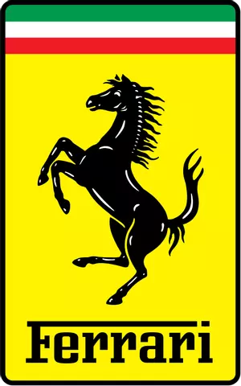
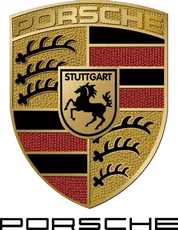
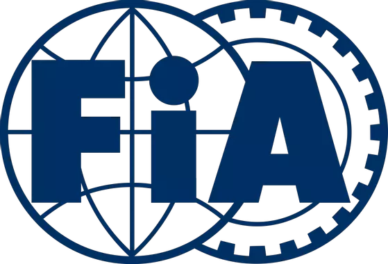

Résumé des principaux accomplissements de Ferrari aux 24 Heures du Mans :
Ferrari a remporté les 24 Heures du Mans à neuf reprises en tant que constructeur.
Leurs victoires se sont étalées sur plusieurs décennies, de 1949 à 1965.
Dans les années 50, Ferrari a été particulièrement dominant,
remportant plusieurs fois la course avec des voitures comme la Ferrari 166MM,
la Ferrari 375 Plus et d'autres modèles.
La période la plus prestigieuse pour Ferrari aux 24 Heures du Mans s'est produite
dans les années 60.
La Ferrari 250, la Ferrari 275 et la Ferrari 330 P4 ont été des voitures emblématiques
qui ont apporté plusieurs victoires à la marque italienne.
La dernière victoire absolue de Ferrari en tant que constructeur aux 24 Heures du Mans date de 1965,
bien que Ferrari ait continué à participer à la course dans différentes catégories par la suite.
Récentes participations :
Au fil des années, Ferrari a continué à être présente dans la compétition,
mais sans remporter de victoires globales. Cependant, la marque a souvent été compétitive
dans diverses catégories,
participant aux courses d'endurance avec des voitures comme la Ferrari 488 GTE.

Résumé de ses principaux accomplissements de Porsche aux 24 Heures du Mans :
Porsche détient un impressionnant palmarès aux 24 Heures du Mans avec un total de 19 victoires
Porsche a connu plusieurs périodes de domination, notamment dans les années 70, 80 et 90.
Cette décennie a été marquée par la série de voitures de course légendaires comme la Porsche 917,
qui a remporté plusieurs victoires emblématiques pour la marque Allemande.
Au fil des années, Porsche a continué à évoluer avec des modèles comme la Porsche 936, la Porsche 956,
la Porsche 962, et plus récemment la Porsche 919 Hybrid.
Continuité du succès :
Même dans des périodes plus récentes, Porsche a maintenu sa compétitivité aux 24 Heures du Mans,
remportant des victoires dans la catégorie LMP1 avec la Porsche 919 Hybride.
Innovations techniques :
En 2017, la Porsche 919 Hybrid a remporté la course, marquant une autre victoire historique.
Peu après cette victoire, Porsche a décidé de se retirer de la catégorie LMP1 du Championnat du Monde d'Endurance de la FIA (Fédération Internationale de l'Automobile)
